Todos nuestros
servicios en movimiento
Arrastre el carrusel con el dedo o el ratón, o use las flechas. Al tocarlo se detiene solo; cada tarjeta lleva a su ficha.
Consultas
17 servicios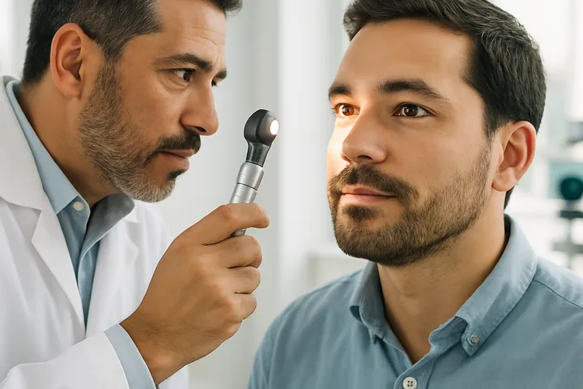
Consulta de oftalmología general
Que aparentemente tengas una adecuada visión, no significa la ausencia de patologías. Ver mal no es el único síntoma…
Ver detalle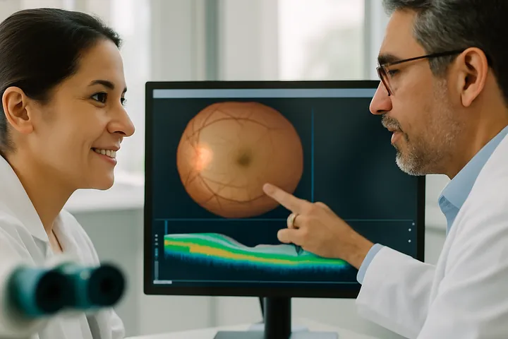
Consulta de oftalmología subespecializada
En VISIÓN COLOMBIA, disponemos de Profesionales idóneos en las distintas Subespecialidades, abarcando todos los…
Ver detalle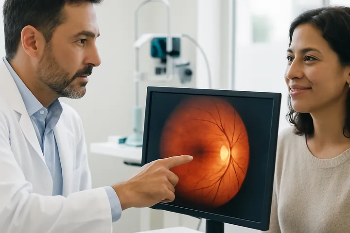
Consulta de retina y vítreo
La Retina es la capa más interna de las tres capas que conforman el ojo y se encarga de transformar los estímulos…
Ver detalle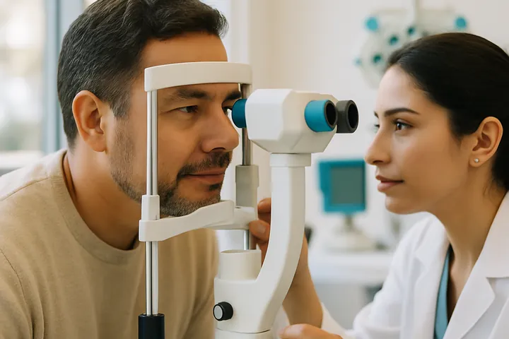
Consulta de glaucoma
El Glaucoma es una enfermedad crónica del Nervio Óptico, irreversible, que puede deberse a varias causas y cuyo…
Ver detalle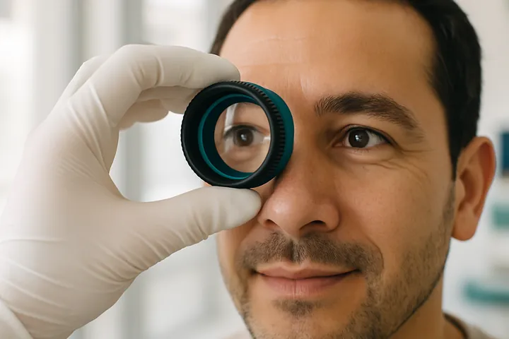
Consulta de córnea y segmento anterior
La Córnea es la capa externa del ojo, es transparente, curvilínea y actúa como la primera lente que encuentra la luz,…
Ver detalle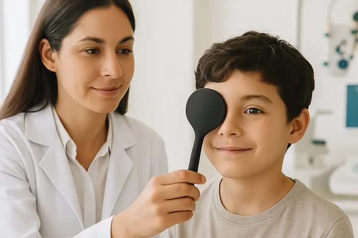
Consulta de estrabismo
El Estrabismo es la perdida de alineamiento de los ejes visuales, ya sea en todas las direcciones visuales o en…
Ver detalle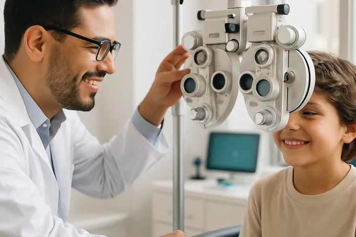
Consulta de oftalmología pediátrica
En VISIÓN COLOMBIA, buscamos contribuir al desarrollo y calidad de la vida de los niños, tratando los errores…
Ver detalle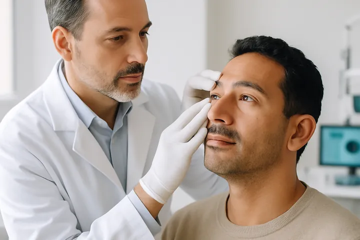
Consulta de oculoplástica
La Cirugía Oculoplástica es una subespecialidad dentro de la Oftalmología, que trata los trastornos y enfermedades…
Ver detalle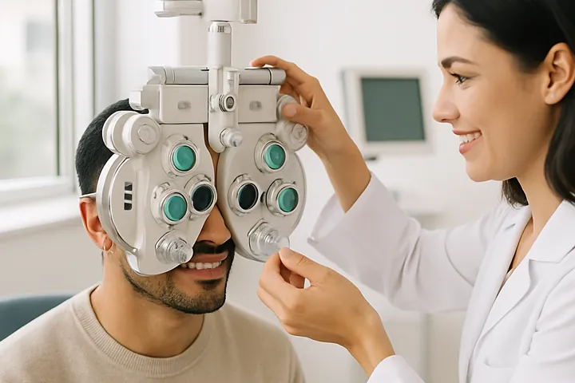
Consulta de optometría
La consulta de Optometría está dirigida a la atención primaria de la Salud Visual y Ocular, tiene como propósito la…
Ver detalle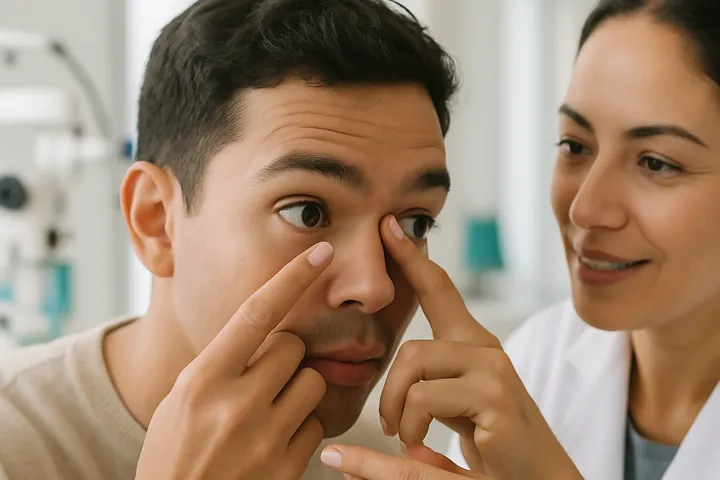
Consulta especializada de lentes de contacto
Consulta de adaptación de lentes de contacto blandos, blandos tóricos y multifocales para pacientes con córneas sanas…
Ver detalleConsulta especializada de rehabilitación con prótesis oculares
La Prótesis Ocular es un Dispositivo Médico que reemplaza estéticamente al Globo Ocular en caso de pérdida por…
Ver detalleConsulta de optometría pediátrica
La valoración visual en la primera infancia permite determinar alteraciones visuales e identificar alteraciones…
Ver detalle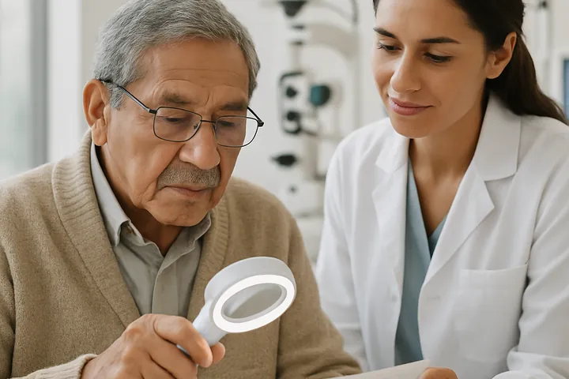
Consulta especializada de baja VISIÓN
De acuerdo con la Organización Mundial de la Salud se considera un paciente con Baja visión cuya condición visual con…
Ver detalleConsulta especializada de rehabilitación visual
Cuando una persona presenta una condición visual patológica esto le impide realizar actividades que previamente se…
Ver detalleConsulta especializada de rehabilitación para la autonomía personal
Una vez prescritas las ayudas y después de haber ejecutado un programa de entrenamiento visual, se establecen…
Ver detalle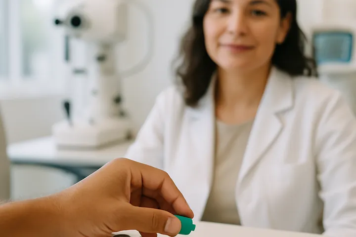
Test de FARNSWORTH D15
Esta prueba permite diagnosticar y clasificar alteraciones de la Visión al Color (anomalía o anopia), de acuerdo con…
Ver detalle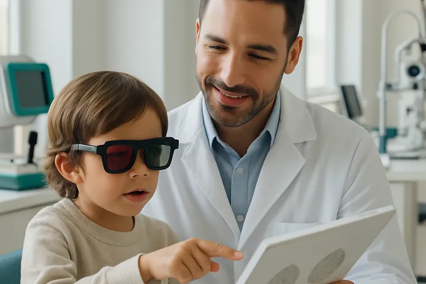
Test de estereopsis (test de TITMUS)
Esta prueba está indicada para Evaluar y Diagnosticar el nivel de la Visión Estereoscópica. Emplea la figura de una…
Ver detalleConsulta de oftalmología general
Que aparentemente tengas una adecuada visión, no significa la ausencia de patologías. Ver mal no es el único síntoma…
Ver detalleConsulta de oftalmología subespecializada
En VISIÓN COLOMBIA, disponemos de Profesionales idóneos en las distintas Subespecialidades, abarcando todos los…
Ver detalleConsulta de retina y vítreo
La Retina es la capa más interna de las tres capas que conforman el ojo y se encarga de transformar los estímulos…
Ver detalleConsulta de glaucoma
El Glaucoma es una enfermedad crónica del Nervio Óptico, irreversible, que puede deberse a varias causas y cuyo…
Ver detalleConsulta de córnea y segmento anterior
La Córnea es la capa externa del ojo, es transparente, curvilínea y actúa como la primera lente que encuentra la luz,…
Ver detalleConsulta de estrabismo
El Estrabismo es la perdida de alineamiento de los ejes visuales, ya sea en todas las direcciones visuales o en…
Ver detalleConsulta de oftalmología pediátrica
En VISIÓN COLOMBIA, buscamos contribuir al desarrollo y calidad de la vida de los niños, tratando los errores…
Ver detalleConsulta de oculoplástica
La Cirugía Oculoplástica es una subespecialidad dentro de la Oftalmología, que trata los trastornos y enfermedades…
Ver detalleConsulta de optometría
La consulta de Optometría está dirigida a la atención primaria de la Salud Visual y Ocular, tiene como propósito la…
Ver detalleConsulta especializada de lentes de contacto
Consulta de adaptación de lentes de contacto blandos, blandos tóricos y multifocales para pacientes con córneas sanas…
Ver detalleConsulta especializada de rehabilitación con prótesis oculares
La Prótesis Ocular es un Dispositivo Médico que reemplaza estéticamente al Globo Ocular en caso de pérdida por…
Ver detalleConsulta de optometría pediátrica
La valoración visual en la primera infancia permite determinar alteraciones visuales e identificar alteraciones…
Ver detalleConsulta especializada de baja VISIÓN
De acuerdo con la Organización Mundial de la Salud se considera un paciente con Baja visión cuya condición visual con…
Ver detalleConsulta especializada de rehabilitación visual
Cuando una persona presenta una condición visual patológica esto le impide realizar actividades que previamente se…
Ver detalleConsulta especializada de rehabilitación para la autonomía personal
Una vez prescritas las ayudas y después de haber ejecutado un programa de entrenamiento visual, se establecen…
Ver detalleTest de FARNSWORTH D15
Esta prueba permite diagnosticar y clasificar alteraciones de la Visión al Color (anomalía o anopia), de acuerdo con…
Ver detalleTest de estereopsis (test de TITMUS)
Esta prueba está indicada para Evaluar y Diagnosticar el nivel de la Visión Estereoscópica. Emplea la figura de una…
Ver detalleExámenes diagnósticos
15 servicios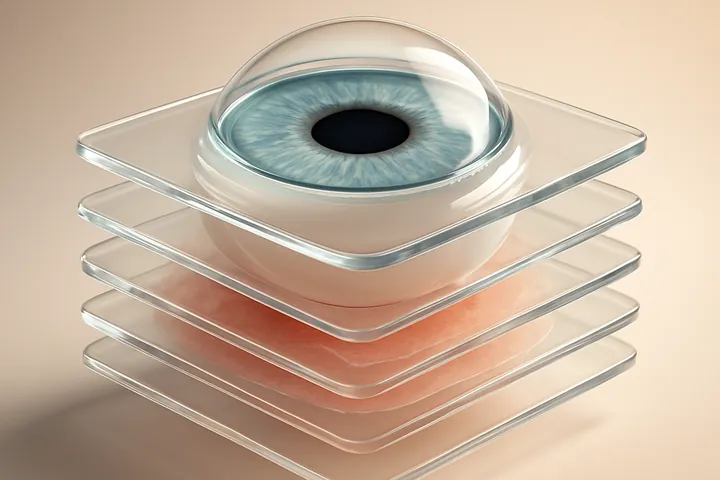
Tomografía óptica coherente
La Tomografía de Óptica Coherente (OCT) nos permite obtener imágenes de alta resolución de corte transversal del…
Ver detalle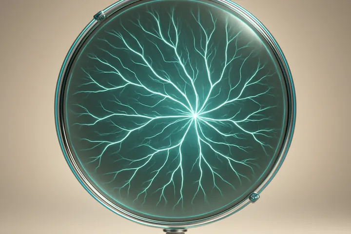
Angiografía fluoresceínica
En VISIÓN COLOMBIA, la Angiografía Fluoresceínica, es un procedimiento Diagnóstico en el cual, mediante sofisticados…
Ver detalle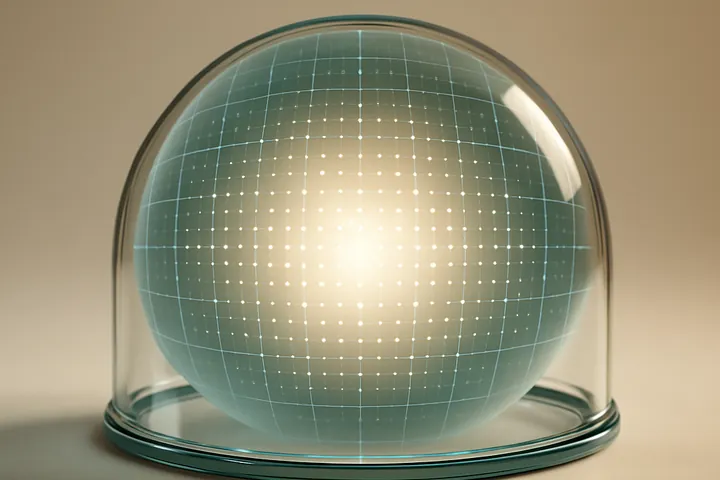
Campo visual computarizado
El Campo Visual es el espacio que percibe el ojo cuando se fija y mira hacia delante. El ojo transmite al cerebro las…
Ver detalle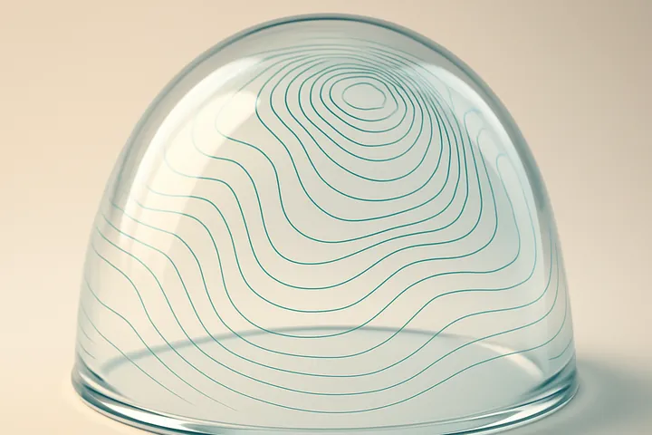
Topografía corneal y paquimetría (Pentacam)
El Pentacam es un examen avanzado para realizar la topografía corneal, tiene la capacidad para calcular la curvatura…
Ver detalleEcografía ocular ultrasónica
La Ecografía Ocular es una técnica diagnóstica que se utiliza para obtener imágenes del globo ocular y de la cavidad…
Ver detalle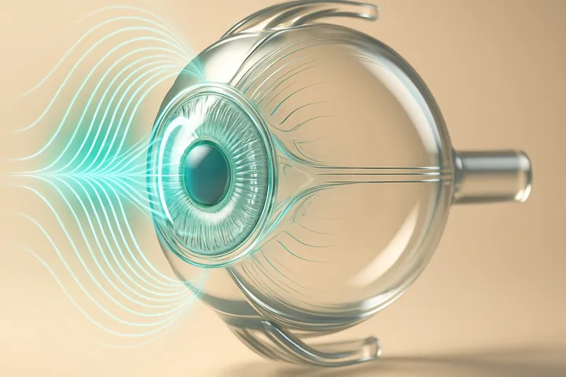
Ultrabiomicroscopía ultrasónica (UBM)
Es una ecografía bidimensional que tiene una frecuencia de ultrasonido cinco veces mayor que la tradicional, lo que…
Ver detalle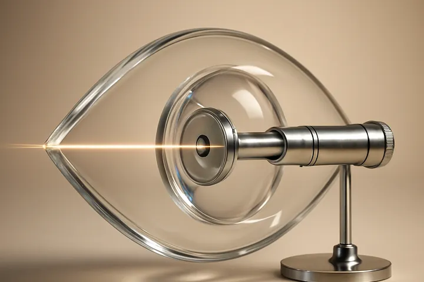
Biometría óptica
La Biometría Óptica es un examen donde se realizan mediciones de los diferentes segmentos del globo ocular, anterior…
Ver detalleInterferometría
La Interferometría mide el potencial visual, que sirve para detectar disminuciones de la agudeza visual por…
Ver detalle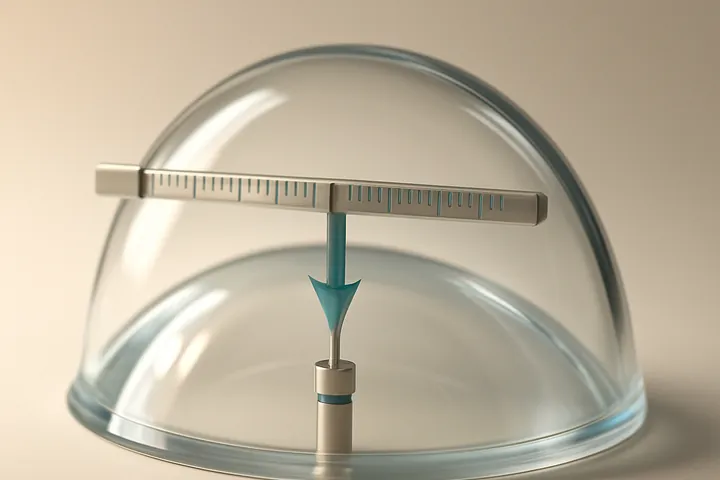
Paquimetría ultrasónica
Es un examen que mide el grosor de la córnea. Conocer este dato es útil en pacientes con cualquier patología corneal,…
Ver detalle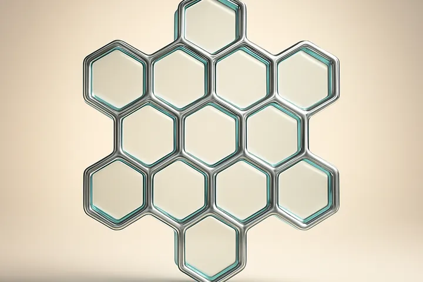
Recuento endotelial
El Recuento de Células Endoteliales es una prueba de no contacto, que permite medir la densidad, el tamaño y la forma…
Ver detalleCitología de impresión
La Citología de impresión es una técnica de diagnóstico, que consiste en realizar, la toma de una biopsia…
Ver detallePupilometría
La Pupilometría es una prueba diagnóstica que nos permite medir el tamaño de la pupila y su comportamiento ante…
Ver detalle
Electrorretinograma
Permite hacer el estudio Electrofisiológico, que evalúa la funcionalidad de la retina. El ERG nos evalúa la respuesta…
Ver detalleElectrooculograma
Método de registro de los movimientos oculares, basado en el registro de la diferencia de potencial existente entre…
Ver detallePotenciales visuales evocados
Registra la actividad bioeléctrica de la corteza visual, como respuesta a estímulos luminosos. Permite valorar la…
Ver detalleTomografía óptica coherente
La Tomografía de Óptica Coherente (OCT) nos permite obtener imágenes de alta resolución de corte transversal del…
Ver detalleAngiografía fluoresceínica
En VISIÓN COLOMBIA, la Angiografía Fluoresceínica, es un procedimiento Diagnóstico en el cual, mediante sofisticados…
Ver detalleCampo visual computarizado
El Campo Visual es el espacio que percibe el ojo cuando se fija y mira hacia delante. El ojo transmite al cerebro las…
Ver detalleTopografía corneal y paquimetría (Pentacam)
El Pentacam es un examen avanzado para realizar la topografía corneal, tiene la capacidad para calcular la curvatura…
Ver detalleEcografía ocular ultrasónica
La Ecografía Ocular es una técnica diagnóstica que se utiliza para obtener imágenes del globo ocular y de la cavidad…
Ver detalleUltrabiomicroscopía ultrasónica (UBM)
Es una ecografía bidimensional que tiene una frecuencia de ultrasonido cinco veces mayor que la tradicional, lo que…
Ver detalleBiometría óptica
La Biometría Óptica es un examen donde se realizan mediciones de los diferentes segmentos del globo ocular, anterior…
Ver detalleInterferometría
La Interferometría mide el potencial visual, que sirve para detectar disminuciones de la agudeza visual por…
Ver detallePaquimetría ultrasónica
Es un examen que mide el grosor de la córnea. Conocer este dato es útil en pacientes con cualquier patología corneal,…
Ver detalleRecuento endotelial
El Recuento de Células Endoteliales es una prueba de no contacto, que permite medir la densidad, el tamaño y la forma…
Ver detalleCitología de impresión
La Citología de impresión es una técnica de diagnóstico, que consiste en realizar, la toma de una biopsia…
Ver detallePupilometría
La Pupilometría es una prueba diagnóstica que nos permite medir el tamaño de la pupila y su comportamiento ante…
Ver detalleElectrorretinograma
Permite hacer el estudio Electrofisiológico, que evalúa la funcionalidad de la retina. El ERG nos evalúa la respuesta…
Ver detalleElectrooculograma
Método de registro de los movimientos oculares, basado en el registro de la diferencia de potencial existente entre…
Ver detallePotenciales visuales evocados
Registra la actividad bioeléctrica de la corteza visual, como respuesta a estímulos luminosos. Permite valorar la…
Ver detalleCirugías
09 servicios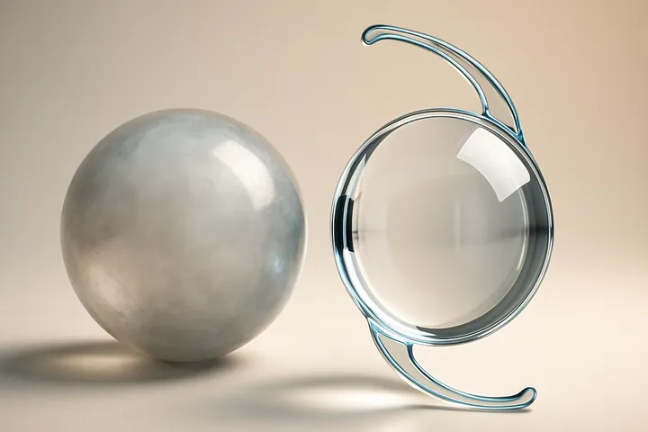
Extracción de cataratas
Es una cirugía ambulatoria, que consiste en retirar un cristalino opaco (catarata) del ojo y reemplazarlo por un…
Ver detalleCirugía refractiva personalizada
La CIRUGÍA REFRACTIVA PERSONALIZADA es un procedimiento quirúrgico con Laser de alta precisión (Excimer Láser Wave…
Ver detalleQueratoplastia o trasplante corneal
El trasplante de córnea o queratoplastia es un procedimiento quirúrgico que consiste en la sustitución de una córnea…
Ver detallePterigión
El Pterigión es una carnosidad elevada, en el globo ocular, que comienza en lo blanco del ojo (la Esclera) y puede…
Ver detalleBlefaroplastia
La cirugía de los párpados, técnicamente conocida como blefaroplastia, es una técnica quirúrgica ambulatoria, que se…
Ver detalle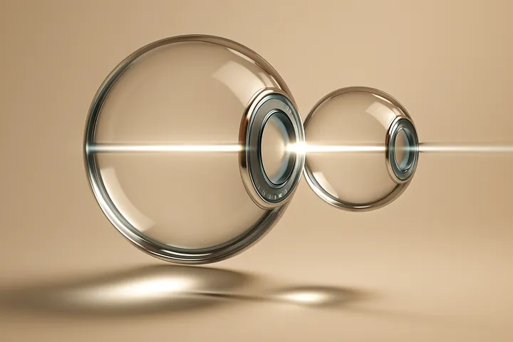
Cirugía de estrabismo
El Estrabismo (independientemente de la edad) es un problema por el cual los ejes oculares, no están paralelos o…
Ver detalleImplante de anillos intraestromales
El Queratocono es una patología degenerativa de la córnea (parte transparente de la cara anterior del ojo) no…
Ver detalleReticulación corneal (crosslinking)
El CROSSLINKING O ENTRECRUZAMIENTO DEL COLAGENO CORNEAL O CXL fortalece el tejido corneal, a fin de detener la…
Ver detalle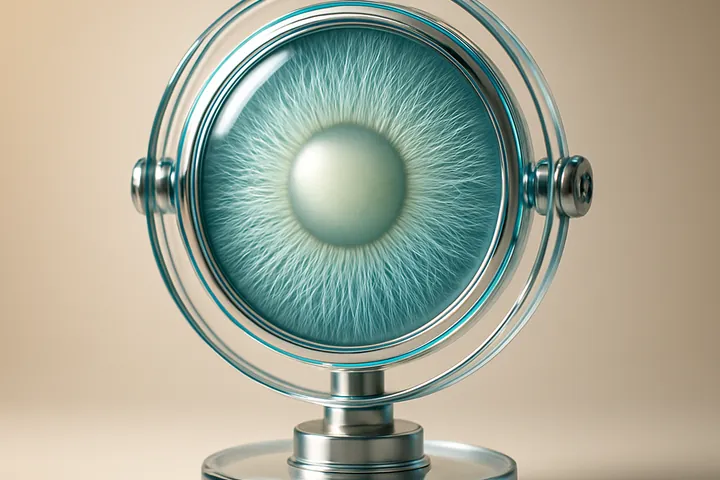
Degeneración macular
La degeneración macular es un trastorno ocular, que destruye lentamente la visión central y aguda, lo cual dificulta…
Ver detalleExtracción de cataratas
Es una cirugía ambulatoria, que consiste en retirar un cristalino opaco (catarata) del ojo y reemplazarlo por un…
Ver detalleCirugía refractiva personalizada
La CIRUGÍA REFRACTIVA PERSONALIZADA es un procedimiento quirúrgico con Laser de alta precisión (Excimer Láser Wave…
Ver detalleQueratoplastia o trasplante corneal
El trasplante de córnea o queratoplastia es un procedimiento quirúrgico que consiste en la sustitución de una córnea…
Ver detallePterigión
El Pterigión es una carnosidad elevada, en el globo ocular, que comienza en lo blanco del ojo (la Esclera) y puede…
Ver detalleBlefaroplastia
La cirugía de los párpados, técnicamente conocida como blefaroplastia, es una técnica quirúrgica ambulatoria, que se…
Ver detalleCirugía de estrabismo
El Estrabismo (independientemente de la edad) es un problema por el cual los ejes oculares, no están paralelos o…
Ver detalleImplante de anillos intraestromales
El Queratocono es una patología degenerativa de la córnea (parte transparente de la cara anterior del ojo) no…
Ver detalleReticulación corneal (crosslinking)
El CROSSLINKING O ENTRECRUZAMIENTO DEL COLAGENO CORNEAL O CXL fortalece el tejido corneal, a fin de detener la…
Ver detalleDegeneración macular
La degeneración macular es un trastorno ocular, que destruye lentamente la visión central y aguda, lo cual dificulta…
Ver detalleÓptica y otros servicios
03 servicios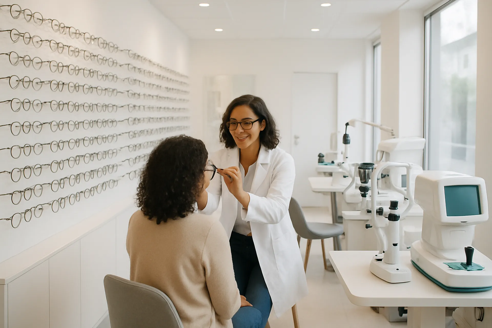
Óptica
Nuestro principal objetivo es cuidar de tu mirada. Y como no hay dos miradas iguales, hemos creado servicios a la…
Ver detalleEmpresas
Las campañas de salud visuales para empresas se realizan directamente en la sede de su empresa.
Ver detalle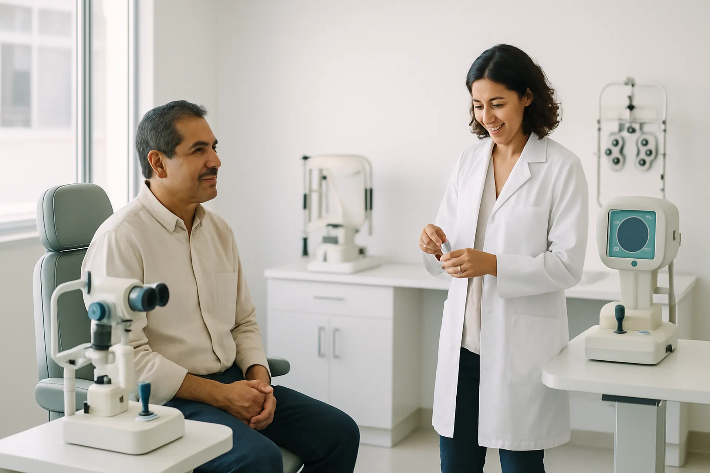
Medicina estética facial
Promueve la mejora de tu calidad de vida a través de sus tratamientos especializados en Medicina Estética.
Ver detalleÓptica
Nuestro principal objetivo es cuidar de tu mirada. Y como no hay dos miradas iguales, hemos creado servicios a la…
Ver detalleEmpresas
Las campañas de salud visuales para empresas se realizan directamente en la sede de su empresa.
Ver detalleMedicina estética facial
Promueve la mejora de tu calidad de vida a través de sus tratamientos especializados en Medicina Estética.
Ver detalle